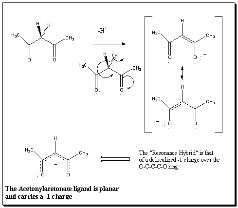

|
|
More Information on the Cr(acac)3 MoleculeMany Tris(acetonylacetonate)metal complexes have been used in this Web site to demonstrate aspects of structure and symmetry.The tris(acetonylacetonate)chromium(III) molecule is shown in two different views on your left. The top structure shows multiple bonds but does not illustrate the delocalized nature of the bonds. The bottom structure depicts the bonds as delocalized. When deprotanated, each ligand carries a negative one charge and the 5 membered O-C-C-C-O ring is planar. The ligand is called acetonylacetonate and is abbreviated "acac".  A Reference for the structure of each M(acac)3 used in this site can be found here. |
Resources developed by Marion E. Cass, Carleton College and updated in 2025. Computations and content done in consultation with Henry S. Rzepa, Imperial College, London